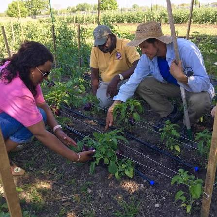

Sustainability
Responsible growing methods that respect resources and the environment.
To empower urban communities to grow fresh, healthy food through sustainable farming education, community participation and accessible urban agriculture initiatives.
Urban communities where people have the knowledge, confidence and opportunities to grow food responsibly, even when space is limited.

Our work is guided by practical action and shared responsibility.
Responsible growing methods that respect resources and the environment.
Useful knowledge and practical skills for beginners and experienced growers.
People learning, sharing and growing together.